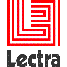

Me
@binout
https://github.com/binout
- Développeur Java depuis 10 ans
- Membre du Bordeaux JUG

- Commiteur Asciidoctor

- Technical Leader chez Lectra, numéro un mondial des solutions dédiées à l’industrie du textile (machines et logiciels)
Une solution ?
Choisir un language de balisage léger pour faciliter l’écriture des articles :
- on se concentre plus sur le fond que la forme
- un simple éditeur de texte suffit
- plus adapté à des articles techniques (code source)
SOLUTION : ASCIIDOC !

Solution du vrai développeur
On installe sa forge pour son blog … mais :
- ça prend du temps à installer
- il faut maintenir et mettre à jour

/